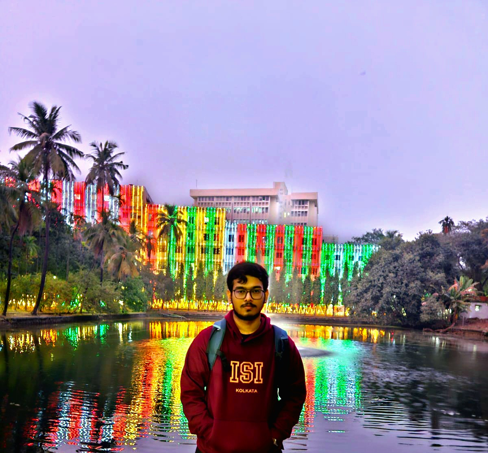

Under Graduate Student @ ISI Kolkata · Bachelor of Statistical Data Science

Developed and compared two classical face-recognition approaches — Eigenfaces (PCA) and Fisherfaces (PCA + LDA) — to explore dimensionality reduction and discriminative feature extraction for facial recognition. Implemented an end-to-end recognition pipeline involving grayscale conversion, image resizing, histogram equalization, pixel standardization, and cosine-similarity-based matching. Evaluated both approaches on a dataset containing 38 individuals, with 304 training images and 76 testing images.
As part of our academic work at the Indian Statistical Institute (ISI), we explored the Count-Min Sketch (CMS), a probabilistic data structure designed to estimate item frequencies in massive data streams while using significantly less memory than exact frequency-counting methods. The project focused on understanding how hashing and probabilistic analysis can be combined to solve large-scale data-processing problems efficiently.